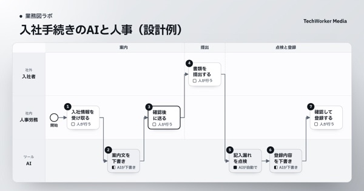
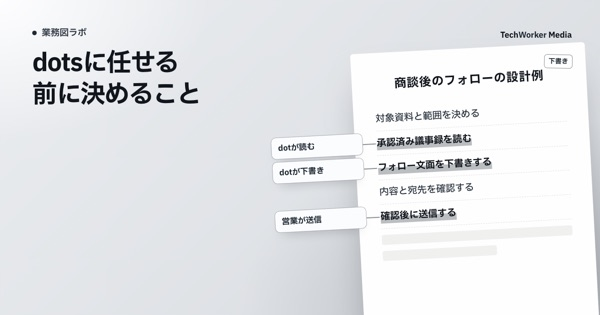

業務図で、AIに任せる仕事を決める。
部署の仕事を業務図にすると、誰が・どの順で・何をしているかが1枚で分かります。そのうえで、どの工程をAIに任せ、どこを人が判断するかを決めます。部署別の業務図の例、聞き取りで業務を洗い出す方法、AIの持ち場の決め方、業務図を古くしない運用を扱います。
記事一覧
すべて：3件

部署別の業務図
2026.10.05
入社手続きのAI活用｜公開テンプレートで見る、人事が確定する3か所
入社手続きを7工程に分けた公開図から、送付・不備の確定・登録を人事に残す理由を解説します。個人情報を渡す前の条件も確認します。
人事・研修担当→

任せる工程の決め方
2026.10.03
OpenAIのdotsとは｜公式画面で見る仕事と、任せる範囲の決め方
公式の営業デモから、AIが作る資料と人が承認する約束を読み解きます。TechWorkerの商談業務図を使い、下書き・確認・送信を分けます。
業務責任者→

任せる工程の決め方
2026.10.02
AIに任せる業務の決め方｜商談業務図で読む、下書きと実行の境界
TechWorkerの公開済み商談画面から、AIの下書きと人の送信を分ける方法を解説します。工程ごとに、担当と「やらないこと」を決めます。
業務責任者→
このメディアには、選んだ読者向けの記事がまだありません。
ほかのメディアを見る
このメディアについて
「業務図ラボ」は、AIの聞き取りで部署の業務フローを業務図にするサービス「CompanyMap AI」を提供する株式会社TechWorkerが運営するメディアです。業務図を描くことを目的にせず、図をもとにAIに任せる仕事と人が判断する仕事を決めるための実務の知識をまとめています。
記事は、公的機関・製品の公式資料などの一次情報と、TechWorker自身の業務図をもとに書いています。